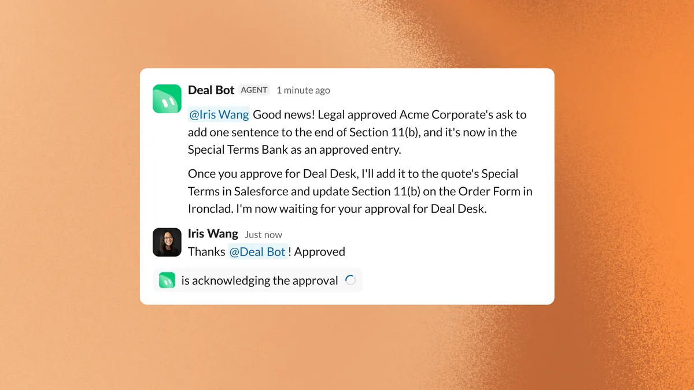

共用機器人：把銷售流程切成三個有權限邊界的工作角色
導讀原文：xAI 官網〈Your next sales teammate should be a Grok Bot〉——由自家業務團隊（文中自稱 SpaceXSI Sales team）自述 Shared Bots 的實作經驗，不是產品規格書
xAI 的銷售組織（原文稱 Sales team）把每位業務各自養的 Grok Bot，收斂成三個共用機器人：各佔成交週期一段，用權限與覆核線畫出邊界。
- 01業務 → Account Intel找候選帳戶、依帳戶歷史做會前簡報
- 02Gong → Account Intel讀逐字稿、改 Salesforce、草擬跟進信
- 03業務 → Quote Bot多組產品與折扣並排比較，不必開 CPQ
- 04Quote Bot → 核准流程送審、追蹤狀態；動 Salesforce 前先給預覽
- 05Quote Bot → Ironclad產訂單、下載可執行合約、草擬寄客戶的信
- 05b分支：例外 → Deal Bot對照已核准政策與合約語言，備妥變更
- 06Deal Bot → Salesforce每筆核准蓋章：決策、理由、所支援的 DRI
本站重繪；原文分三節敘述三個機器人，未給這條端到端順序，編號為編輯整理。原文為 xAI 自報的內部實作經驗，全篇無任何量化成效數字。
先量足跡，再補能力。GTM 工程團隊讓 Grok Bot 分析 Salesforce 活動紀錄，找出最值得自動化的工作；答案是會後更新 opportunity，之後才補工具與商業規則。
三個角色各自帶專長進流程。原文的說法是把成交週期更大塊地交出去，人留在客戶與需要判斷的決策上。
每個 Bot 都對應業務組織裡本來就存在的職務，因此規則有專家可寫、成果有驗收人。
共用，是把維護權交給職務
起點是每位業務自己建 Bot，用來研究帳戶、準備會議、管 pipeline。
每人自己養一隻，解法各不相同；改善只留在自己手上。
由最熟該職務的人建置維護；改一次，所有使用者同步生效。
本站整理；兩欄皆出自原文敘述，原文未做此對照表。
收斂的做法，是把大家各自做最好的部分集中成團隊版，維護權跟著職務走。
原文把 Shared Bots 定位成「圍繞超級智慧的組織方式」，不是新模型、也不是新功能。
共用的是知識與規則，不是同一個對話：每位業務與同一個 Shared Bot 的對話是私密的，且以他本人的權限執行。
原文對 Quote Bot 的形容是「在一次對話裡完成這道流程的一大部分」——不必在系統之間切換、等別人有空回覆。
主動性也是原則：Account Intel 會先依帳戶歷史準備好會前簡報，這條流程可排程自動跑。
（編輯觀點）維護權跟著職務走，等於把「規則由誰定義」寫進組織，而不是寫進某個人的提示詞。
治理三題：知道什麼、能做什麼、何時人接手
原文把共用機器人的設計問題拆成三題，答案全部落在權限與流程，不在提示詞。
| 題目 | 原文做法 | 實例與限定語 |
|---|---|---|
| 它知道什麼 | 共用 skills ＋接上內部 source of truth；流程一改，改一次就全隊同步 | 要懂它操作的系統：Salesforce、CPQ、Ironclad、Slack、Gong，以及它遵守的商業規則 |
| 它能做什麼 | 以使用者本人權限執行，敏感動作再收窄；rate limits 防大規模誤改；部分動作保留給專門機器人 | 業務不能用 Quote Bot 核准自己的折扣；Deal Bot 才有業務沒有的權限；動 Salesforce 前先給預覽、要確認 |
| 何時人接手 | 目前只要判斷準則無法明確定義，或機器人要準備對客戶的溝通，就必須人工覆核 | 原文：等能量測它的工作品質、對它的決策有信心，才給更多責任 |
→ 可橫向滑動
Deal Bot 支援的是 Deal Desk：例外與風險由這個團隊決定，機器人接手例行的對照與備妥變更。
對需要人類判斷的決策，Deal Bot 的做法是準備一份建議案，請 Deal Desk 專員核准後才動。
它的權限不是額外加出來的：能改需要 Deal Desk 職權的報價欄位，因為那個職權本來就屬於 Deal Desk。
Slack 上業務丟來的請求也由它分流：轉給正確的跨部門負責人，並先查法務是否已有類似條款。
「對客戶發話」那條管到機器人準備的溝通內容；Account Intel 草擬的跟進信因此一律交業務審閱。
（編輯觀點）三題裡最難抄的是第三題：覆核線畫在哪，決定它是助理還是同事。
核准權留在人身上

已經上線的還有 Competitive Intel Bot（維持競品情報、準備競品對話）與 Sales Training Bot（新人上手與技能養成）。
共用 Bot 沒有取代個人 Bot：業務仍在建自己用的版本。原文說整體仍很早，下一步是承擔更多責任、彼此協調。
目標寫在最後一段：人專心面對客戶，由懂那份工作的人維護的機器人接手支撐性的工作。
Deal Bot 蓋章的用意是問責、可追溯與符合公司政策；DRI 指它當時支援的直接負責人。
覆核線是原文用「for now」給出的現行規則，不是永久架構。
（編輯推論）可搬用的順序是：先挑規則寫得出來、成果量得出來的流程做成角色，再談跨角色協調。
帶走三件事
選擇的單位是職務，不是助理。萬用助理找不到誰為輸出負責。
權限設計就是產品設計。本人權限＋敏感動作收窄＋rate limits＋寫入前預覽（編輯觀點）。
覆核線要可執行。判準是「說不清」與「對客戶發話」，且每筆核准留決策、理由、DRI。
同一主題的其他館藏
導讀為本站編輯內容（AI 摘解自原文與館藏重點，非官方文件）；引述數據出自原文，圖解與小標為編輯整理。內容經對照原文的獨立事實審查後發布。